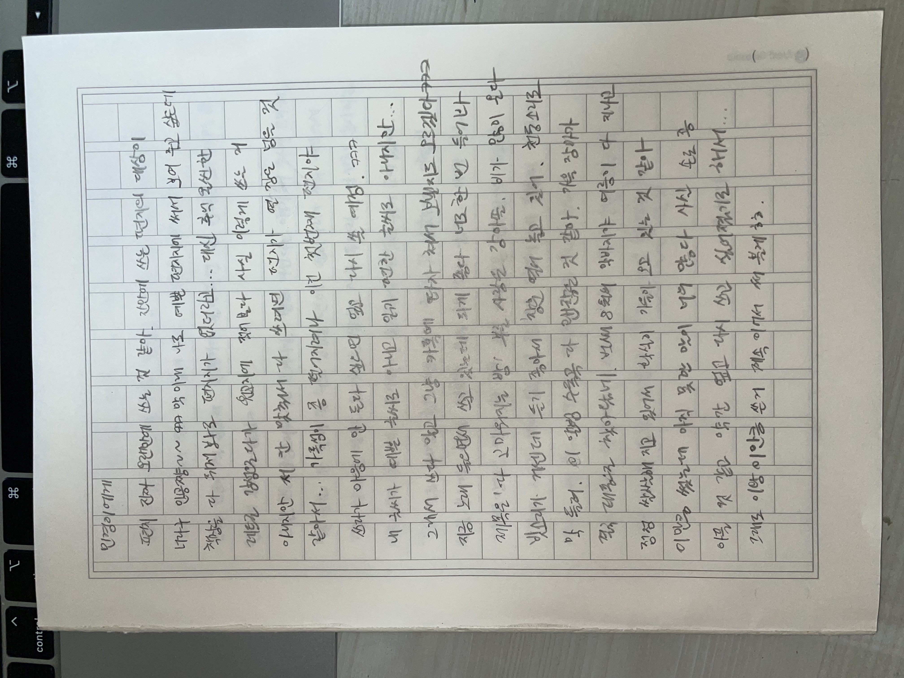
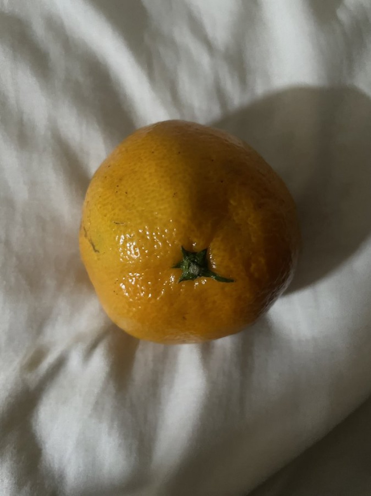

2023.11
왜 그런지는 모르겠는데 겨울 느낌 나서 좋아하는 사진이다!!
이 귤이 엄청 달고 맛있었던 걸로 기억함
항상 겨울되면 내 애착이불이랑 수면양말 신고 귤 매일 먹었는데 얼른 집가고 싶다!!!

✩✩✩✩✩✩✩✩✩✩✩✩✩✩✩✩✩✩✩✩✩✩✩✩✩✩✩✩✩✩✩✩✩✩✩✩✩✩✩✩✩✩✩✩✩✩✩✩✩✩✩✩✩✩✩✩✩✩✩✩✩✩✩✩✩✩✩✩✩✩✩✩✩✩✩✩
 |
2019.11
친구랑 야자하다가 선생님 몰래 춤췄을때 사진 |
|
2020.11
친구랑 부산 놀러갔다가 초밥 맛집이라 길래 들러서 먹었던 사진 |

|
 |
2021.11 친구가 나한테 편지 써서 보내준 사진 |
 |
2023.11 내가 제일 좋아하는 보기만 해도 겨울같은 귤 사진 |